Show other secondary papers
An AI-driven robotic system for two-dimensional hetero-assemblies
Authors: Xiaoxi Li, Jinkun He, Haojie Liu, Xipeng Liu, Zewen Wu, Jing Li, Kai Zhao, Shan Li, Xingdan Sun, Xiaoxue Fan, Zhiren Xiong, Xingguang Wu, Xuanzhe Sha, Zhili Lin, Caixia Yang, Luosha Han, Jie Xu, Woye Pei, Kaining Yang, Jing Zhang, Xiaolong Feng, Tongyao Zhang, Zhu Liang, Kenji Watanabe, Takashi Taniguchi, Ming Tian, Neng Wan, Jing Zhang, Jianming Lu, Wenjing Hong, Zheng Vitto Han
Type: experiment · Category: strongly correlated electrons · PDF: https://arxiv.org/pdf/2605.20420v1
Analysis basis: full PDF text, analyzed in chunks
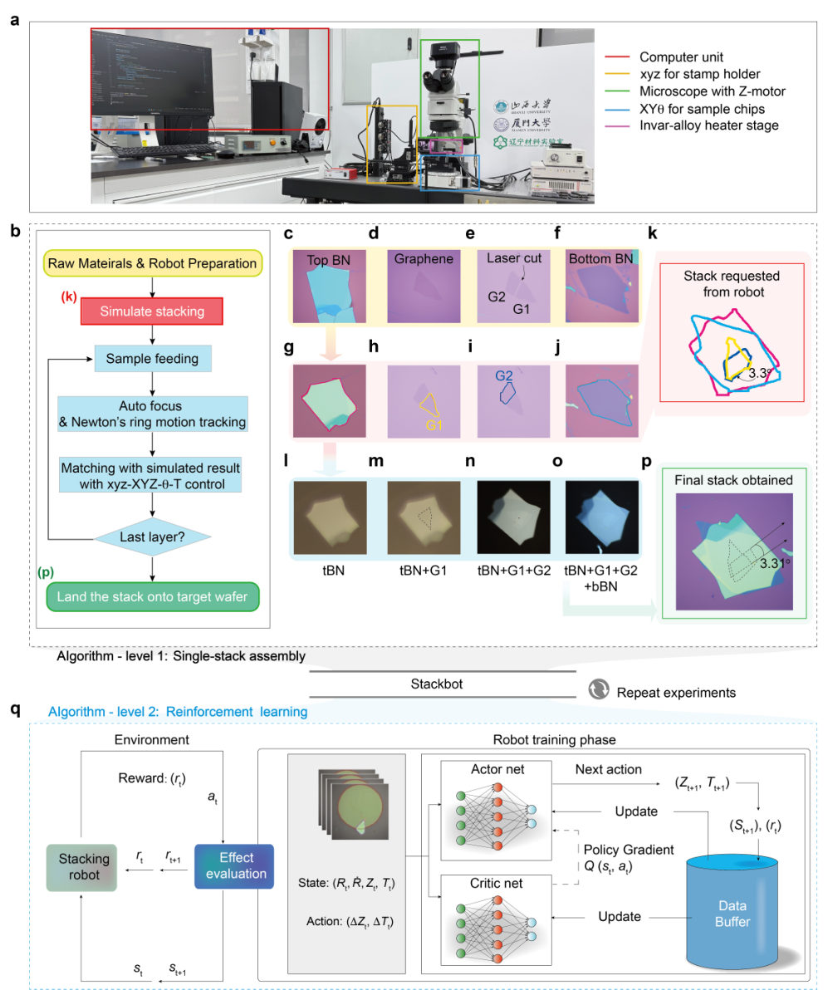
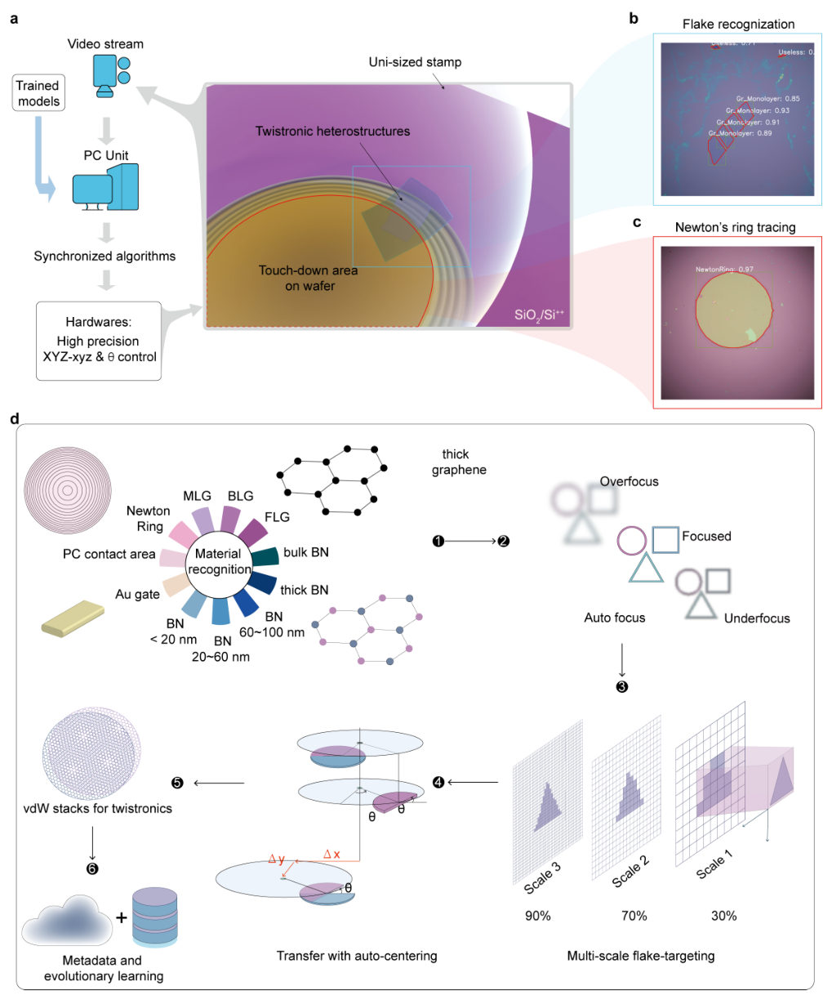
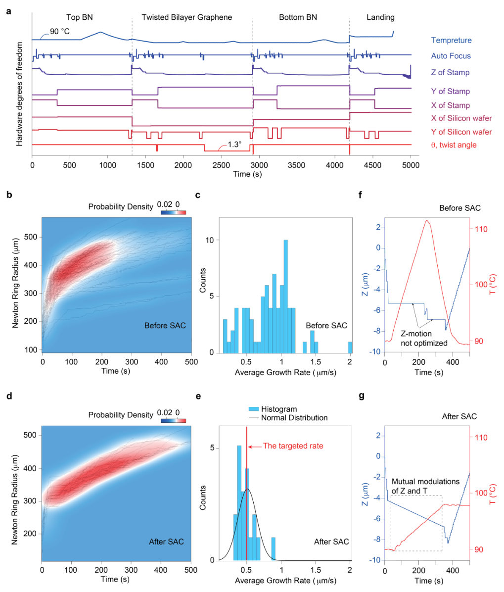
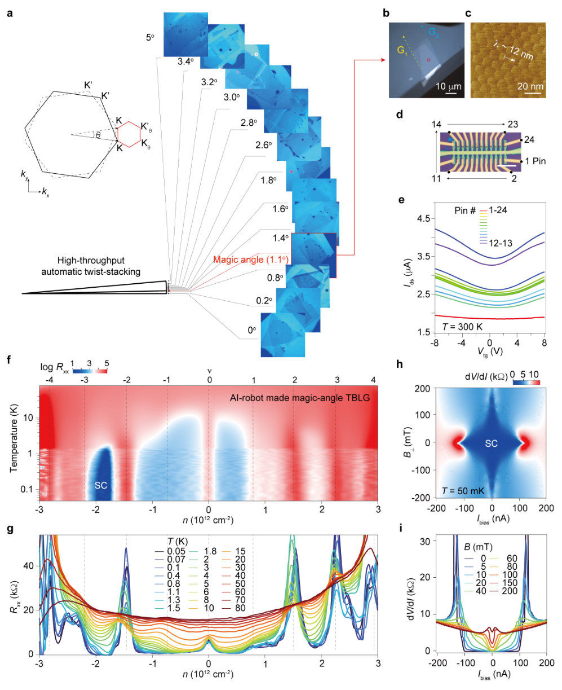
Summary. This paper presents an intelligent robotic system that automates the complex assembly of 2D van der Waals heterostructures using reinforcement learning. By achieving high-precision control over twist angles, the system successfully produced twisted bilayer graphene that exhibits magic-angle superconductivity. This technology enables high-throughput, scalable fabrication of moiré superlattices for studying emergent quantum phenomena.
Why it may be interesting. not directly relevant
Detailed structure
Main problem. The fabrication of 2D van der Waals twistronic heterostructures, such as twisted bilayer graphene, is currently a manual, low-throughput, and high-variability process that limits the exploration of moiré physics.
Main result. The development of an AI-driven robotic system that achieves high-precision, automated assembly of TBLG, successfully demonstrating unconventional superconductivity and correlated insulating states in robot-fabricated samples.
Method. An automated 'stack-bot' platform using a hierarchical computer-vision pipeline (YOLO and CRM) for flake recognition and a Soft Actor-Critic (SAC) reinforcement learning framework for self-optimizing motion and temperature control.
Model / system. An AI-driven robotic assembly system featuring 8 degrees of freedom (XY, xyz, theta, Z-optical, and Temperature) used to stack h-BN encapsulated twisted bilayer graphene (TBLG).
Key observables. Twist angle (theta), lateral displacement error, moiré wavelength, Newton's ring wavefront motion, longitudinal resistance (Rxx), and differential resistance (dV/dI).
Important parameters / regimes. Magic angle (~1.1 degrees), twist angle range (0 to 5 degrees), temperature (down to 50 mK), and magnetic field (up to 12 T).
Assumptions / limitations. The system assumes that the metadata from completed cycles (image residuals, drift, etc.) is sufficient for the reinforcement learning agent to optimize the assembly process.
Figures summary. Figure 1 shows the robotic system and the dual-level AI workflow; Figure 2 details the machine-vision and Newton's ring tracking pipeline; Figure 4 demonstrates high-throughput fabrication and the resulting electronic phase maps (superconductivity and insulating states); Extended Data figures provide statistical error distributions and algorithm details.
Paper structure. Introduction of the fabrication challenge, description of the robotic hardware and AI algorithms (Level-1 perception and Level-2 reinforcement learning), demonstration of high-precision assembly, physical validation via transport measurements in TBLG, and statistical analysis of fabrication accuracy.
Abstract
Nanomaterials stacked on-demand, such as rotationally assembled two-dimensional (2D) van der Waals (vdW) layered compounds, provides a versatile platform for quantum simulation and the exploration of exotic electronic phases. Currently, however, such nanoassemblies remain largely confined to inefficiency, manually operated process, limiting their potential for probing emergent physical phenomena. There is a pressing need in the field for high-precision, automated assembling techniques, especially for the scalable fabrication of 2D twistronic heterostructures. Here, we present an intelligent automation system dedicated to the fabrication of van der Waals stacks, following the state-of-the-art protocol for dry transfer of exfoliated 2D materials. The system further employs metadata generated from each automated stacking procedure to perform reinforcement learning, thereby continuously bettering its performances. As a concrete demonstration, we fabricate twisted bilayer graphene (TBLG) -- known for its challenging preparation -- and exhibit its unconventional superconductivity near the magic angle. Our work may pave the way for high-throughput fabrication of low-dimensional nanomaterials including twistronic heterostructures, where integrating data mining and artificial intelligence can accelerate the discovery of novel physical phenomena.
Designer Quantum States in Magnetic Topological Insulator Multilayers
Authors: Deyi Zhuo, Han Tay, Cui-Zu Chang
Type: both · Category: strongly correlated electrons · PDF: https://arxiv.org/pdf/2605.21287v1
Analysis basis: full PDF text, analyzed in chunks
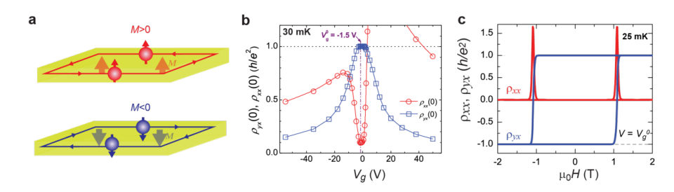
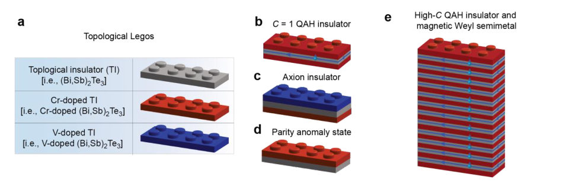
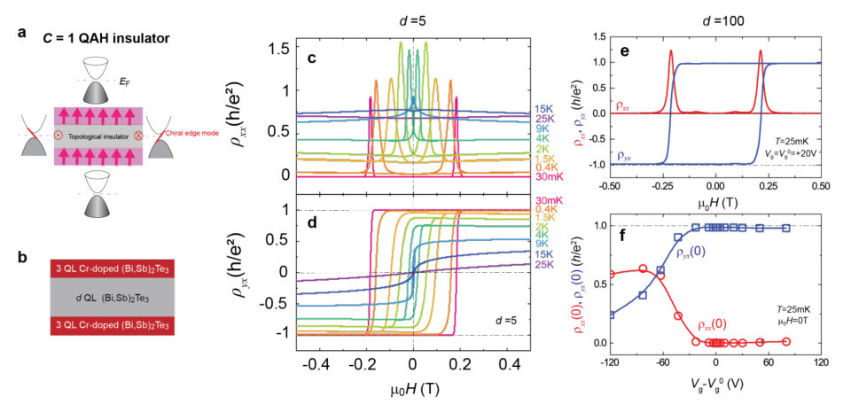
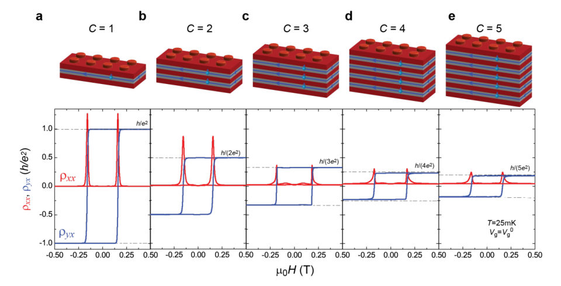
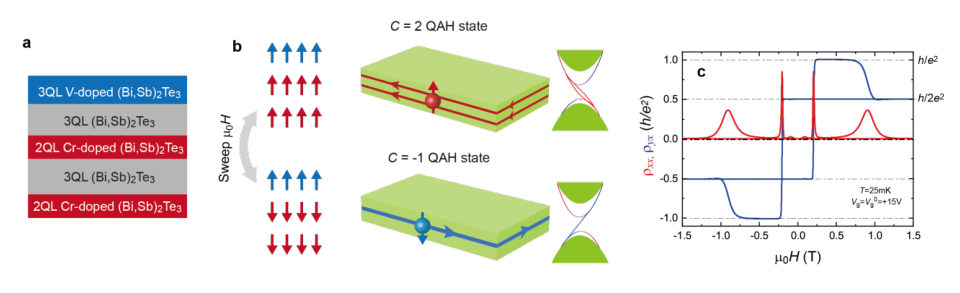
Summary. This review article details how magnetic topological insulator multilayers can be used as building blocks to design custom quantum states. By controlling layer thickness and magnetic doping, researchers can engineer complex phases like high-Chern-number insulators and axion insulators. This platform provides a versatile toolkit for studying topological magnetoelectric effects and 3D topological physics.
Why it may be interesting. not directly relevant
Detailed structure
Main problem. The challenge of engineering and controlling specific topological quantum states, such as high Chern number QAH states, axion insulators, and parity anomaly states, by manipulating the interplay between magnetism and topology.
Main result. The review demonstrates that magnetic TI multilayers act as 'topological Legos,' allowing for the precise engineering of designer quantum states, including high Chern number (C up to 5) states, axion insulators, and synthetic Weyl semimetals.
Method. The paper reviews experimental progress using Molecular Beam Epitaxy (MBE) for atomic-layer precision growth and transport measurements (Hall resistance and longitudinal resistance) to identify quantized states.
Model / system. Magnetic Topological Insulator (TI) multilayers and heterostructures, specifically using Cr-doped or V-doped (Bi,Sb)2Te3 layers combined with undoped (Bi,Sb)2Te3 layers as building blocks.
Key observables. Chern number (C), Hall resistance (rho_yx), longitudinal resistance (rho_xx), Hall conductance (sigma_xy), and magnetic exchange gaps.
Important parameters / regimes. Layer thickness (in Quintuple Layers), magnetic doping concentration, magnetization alignment (parallel vs. antiparallel), and interlayer coupling.
Assumptions / limitations. The review focuses on the regime of low temperatures (down to 25 mK) and assumes high-quality growth via MBE to minimize disorder.
Figures summary. Figure 1 shows the C=1 QAH effect in doped films; Figure 2 illustrates the 'Topological Legos' concept; Figure 3 details QAH in trilayers; Figure 4 shows high Chern number (C=1 to 5) engineering; Figure 5/6 covers phase transitions and SOT switching.
Paper structure. The paper begins with the realization of C=1 QAH effect, progresses to modulation-doped trilayers and high-C states, moves to mesoscopic devices and electrical switching, and concludes with the realization of axion insulators, parity anomaly states, and 3D topological phases.
Abstract
Magnetic topological insulators (TIs) provide a highly tunable platform for engineering quantum states that emerge from the interplay between topology and magnetism. In this review article, we summarize experimental progress over the past decade in designing magnetic TI multilayers by molecular beam epitaxy (MBE). By treating magnetically doped and undoped TI layers as topological Legos, we discuss how layer thickness, magnetic doping, heterostructure architecture, and stacking sequence can be used to control magnetic exchange gaps, interlayer coupling, and the Chern number C with atomic-layer precision. We first briefly review the realization of the C = 1 quantum anomalous Hall (QAH) effect in uniformly Cr-doped (Bi,Sb)2Te3 films in 2013 and uniformly V-doped (Bi,Sb)2Te3 films in 2015. We then discuss how Cr-doped and undoped (Bi,Sb)2Te3 layers can be combined to realize the C = 1 QAH effect in magnetically modulation-doped trilayers, including its extension into the three-dimensional (3D) regime. Next, we review the development of high-C QAH states, engineered plateau phase transitions, mesoscopic QAH devices, and electrical switching of chiral edge-current chirality. Finally, we discuss the realizations of axion insulator and C = 1/2 parity anomaly states in asymmetric magnetic TI trilayers. These advances establish magnetic TI multilayers as a versatile materials platform for creating new designer quantum states, including synthetic Weyl semimetal and QAH metal phases, and for probing the topological magnetoelectric effect in thick axion insulators and 3D QAH insulators.
Designing Magnetic Topological Insulator Trilayers for Highly-Efficient Spin-Orbit Torque Switching
Authors: Ling-Jie Zhou, Deyi Zhuo, Han Tay, Zi-Jie Yan, Pu Xiao, Xiaoda Liu, Bomin Zhang, Cui-Zu Chang
Type: experiment · Category: other · PDF: https://arxiv.org/pdf/2605.21297v1
Analysis basis: full PDF text, analyzed in chunks
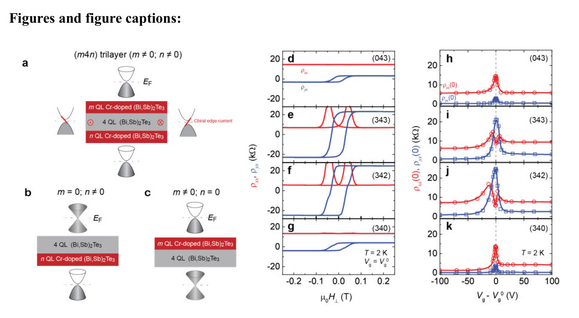
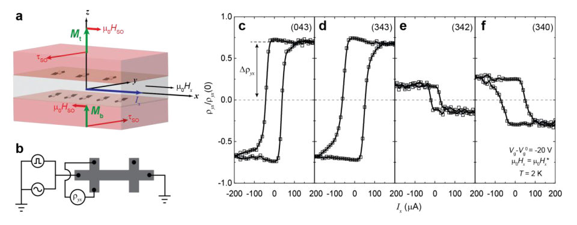
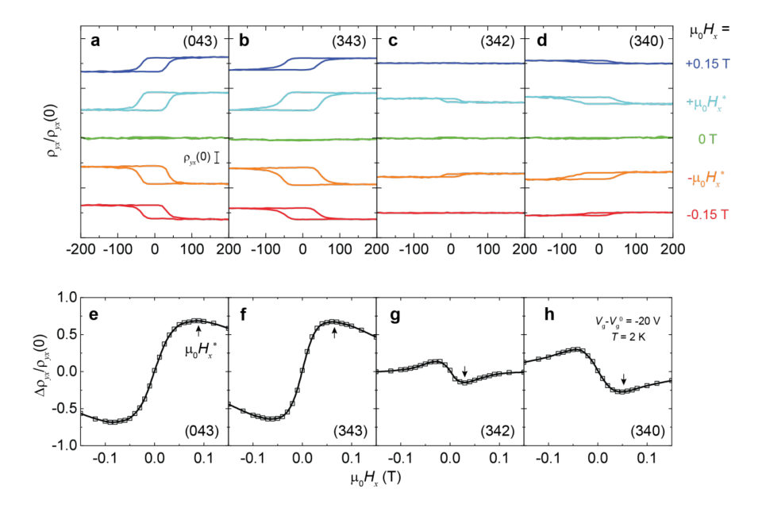
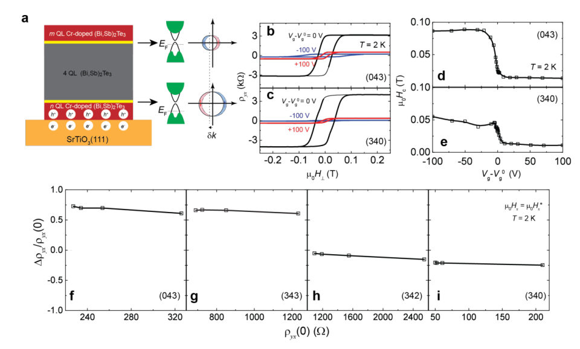
Summary. This paper demonstrates how to achieve efficient magnetization switching in magnetic topological insulator trilayers by leveraging substrate-induced chemical potential asymmetry. By controlling the heterostructure design and gating, the researchers show that the switching of edge current chirality in the Quantum Anomalous Hall state can be effectively manipulated. This work provides a pathway for developing energy-efficient spintronic logic and memory devices.
Why it may be interesting. not directly relevant
Detailed structure
Main problem. Understanding the mechanism behind Spin-Orbit Torque (SOT)-driven magnetization switching and the associated switching of edge current chirality in magnetic topological insulator trilayers.
Main result. The researchers identified that a substrate-induced charging effect from SrTiO3 creates an asymmetric chemical potential between the top and bottom layers, preventing SOT cancellation and enabling efficient magnetization reversal.
Method. Molecular Beam Epitaxy (MBE) was used to synthesize magnetic TI trilayers, followed by electrical transport measurements using DC current pulses and gate voltage tuning in a Physical Property Measurement System (PPMS).
Model / system. Magnetic topological insulator (mTI) trilayers consisting of Cr-doped (Bi,Sb)2Te3 layers separated by a 4 quintuple layer (QL) (Bi,Sb)2Te3 spacer, grown on heat-treated SrTiO3(111) substrates.
Key observables. Hall resistance (rho_yx), longitudinal resistance (rho_xx), Hall angle, and the normalized switching ratio (delta_rho_yx/rho_yx(0)).
Important parameters / regimes. Layer thicknesses (m, n), gate voltage (Vg), in-plane magnetic field (mu_0Hx), and chemical potential (Ef) asymmetry.
Figures summary. Fig 1 shows the trilayer/bilayer structure and transport results (rho_xx, rho_yx) vs magnetic field and gate voltage; Fig 2 illustrates the SOT switching process and the dependence of the switching ratio on pulse current.
Paper structure. The paper introduces the SOT switching problem in magnetic TIs, describes the MBE growth and device fabrication, presents transport measurements characterizing the QAH state, details the SOT switching experiments, and concludes with a mechanistic explanation based on substrate-induced chemical potential asymmetry.
Abstract
Spin-orbit torque (SOT) enables efficient electrical control of magnetization, offering a pathway towards low-power spintronic devices. Magnetic topological insulators (TIs), with spin-momentum-locked surface states and intrinsic ferromagnetism, provide a unique platform for realizing SOT switching of edge current chirality in quantum anomalous Hall (QAH) insulators. In this work, we employ molecular beam epitaxy to synthesize a series of magnetic TI trilayers with controlled layer thicknesses on heat-treated SrTiO3(111) substrates. Electrical transport measurements reveal that SOT-driven magnetization reversal and the associated switching of edge current chirality are governed by the SrTiO3(111) substrate-induced charging effect, which generates an asymmetric chemical-potential alignment between the top and bottom magnetic TI layers. Furthermore, we demonstrate that the switching polarity and efficiency can be tuned through heterostructure design, gate voltage, and in-plane magnetic field, consistent with SOT symmetry. These findings identify chemical potential asymmetry as the origin of the large SOT switching ratio in magnetic TI trilayers and establish a route for electrical control of edge current chirality in QAH insulators. This work advances the understanding of SOT switching mechanism in magnetic topological materials and paves the way for next-generation, energy-efficient QAH-based logic and memory devices.
Multiple Superconducting Phases in Palladium Deuteride Induced by Nuclear-Spin Isotope Effect
Authors: Ryoma Kato, Ten-ichiro Yoshida, Riku Iimori, Masanobu Shiga, Yuji Inagaki, Takashi Kimura, Koichiro Ienaga, Tatsuya Kawae
Type: experiment · Category: strongly correlated electrons · PDF: https://arxiv.org/pdf/2605.20966v1
Analysis basis: full PDF text, analyzed in chunks
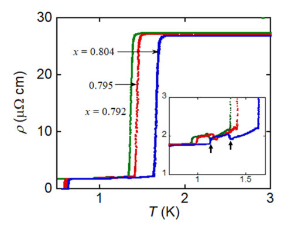
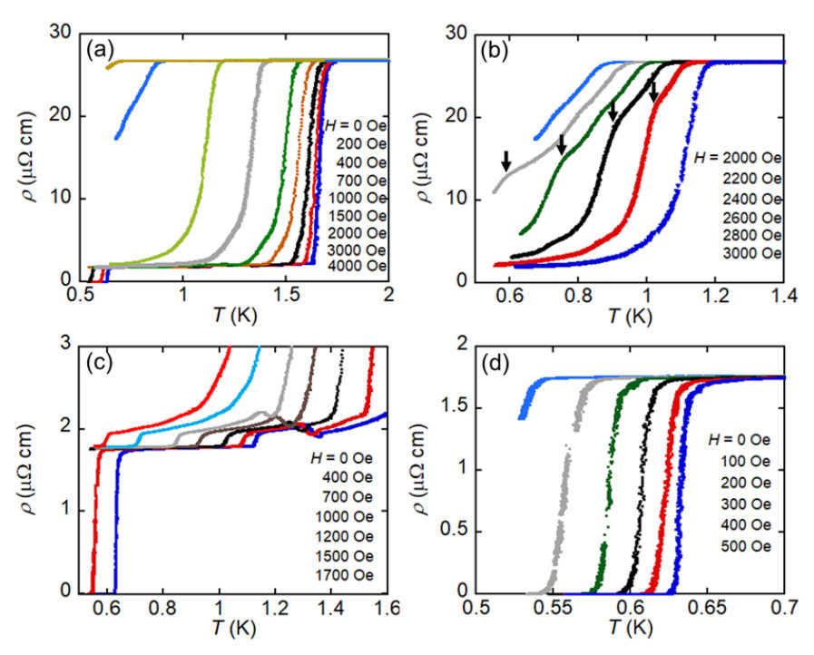
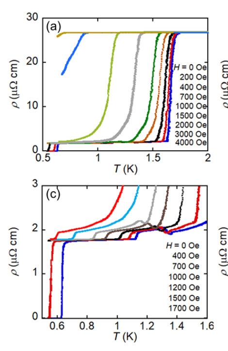
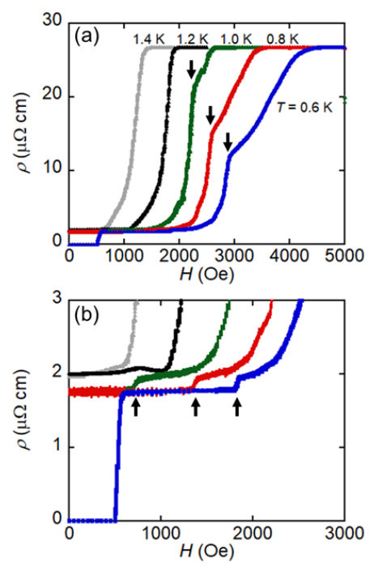
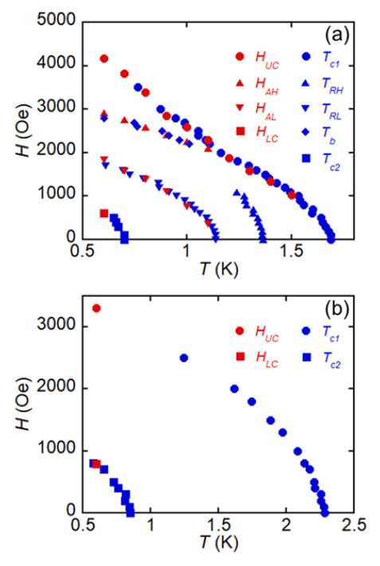
Summary. This paper demonstrates that palladium deuteride exhibits multiple superconducting phases characterized by a unique resistivity anomaly, which is absent in palladium hydride. The researchers attribute this difference to the nuclear-spin isotope effect, suggesting that the superconducting order parameter in PdDx may have non-s-wave symmetry.
Why it may be interesting. not directly relevant
Detailed structure
Main problem. Investigating the origin of multiple superconducting phases in palladium deuteride (PdDx) and determining whether the difference from palladium hydride (PdHx) arises from mass-dependent tunneling or nuclear-spin isotope effects.
Main result. The study identifies a unique rectangular-shaped resistivity anomaly in PdDx that is absent in PdHx, concluding that the effect is driven by the nuclear-spin isotope effect (I=1 for D vs. I=1/2 for H) and suggesting non-s-wave pairing.
Method. The researchers used low-temperature absorption to prepare high-quality PdDx and PdHx thin films and performed temperature- and magnetic-field-dependent electrical resistivity measurements.
Model / system. The physical system consists of high-quality palladium deuteride (PdDx) and palladium hydride (PdHx) thin films where hydrogen/deuterium atoms occupy interstitial sites in the palladium lattice.
Key observables. Electrical resistivity (rho-T and rho-H), superconducting transition temperatures (Tc1, Tc2), and characteristic magnetic field values (HLC, HAL, HAH).
Important parameters / regimes. Nuclear spin (I=1 for deuterium, I=1/2 for hydrogen), deuterium concentration (x), and temperature/magnetic field ranges.
Assumptions / limitations. The authors assume the observed anomalies are intrinsic to the PdDx system rather than due to sample inhomogeneity or impurities.
Figures summary. Fig 1 shows resistivity-temperature curves highlighting the rectangular anomaly; Fig 3 shows resistivity-magnetic field dependence at various temperatures; Fig 4 presents the T-H phase diagrams comparing PdDx and PdHx.
Paper structure. The paper introduces the problem of multiple phases in PdDx, describes the experimental preparation of films, presents resistivity measurements showing the anomaly, compares PdDx to PdHx to isolate the nuclear-spin effect, and concludes with a theoretical hypothesis regarding non-s-wave pairing.
Abstract
We study the superconducting properties of high-quality PdD$_{x}$ films. The resistivity shows a sharp drop at $T$ $\sim$1.7 K, marking the superconducting transition. However, a finite resistivity persists and vanishes at $\sim$0.6 K. The temperature and magnetic-field dependences of the resistivity exhibit multiple anomalies within the superconducting state, revealing distinct superconducting phases. Such anomalies are absent in PdH$_{x}$ films. These results demonstrate a clear qualitative difference between the superconducting phase diagrams of PdD$_{x}$ and PdH$_{x}$, highlighting the role of nuclear-spin isotope effects.
Pressure-induced superconductivity in epitaxially-stabilized Pr$_3$Ni$_2$O$_7$ films
Authors: Motoki Osada, Chieko Terakura, Hsiao-Yi Chen, Akiko Kikkawa, Masamichi Nakajima, Ryoma Asai, Jean-Baptiste Morée, Yusuke Nomura, Ryotaro Arita, Yoshinori Tokura, Atsushi Tsukazaki
Type: both · Category: strongly correlated electrons · PDF: https://arxiv.org/pdf/2605.20653v1
Analysis basis: full PDF text, analyzed in chunks
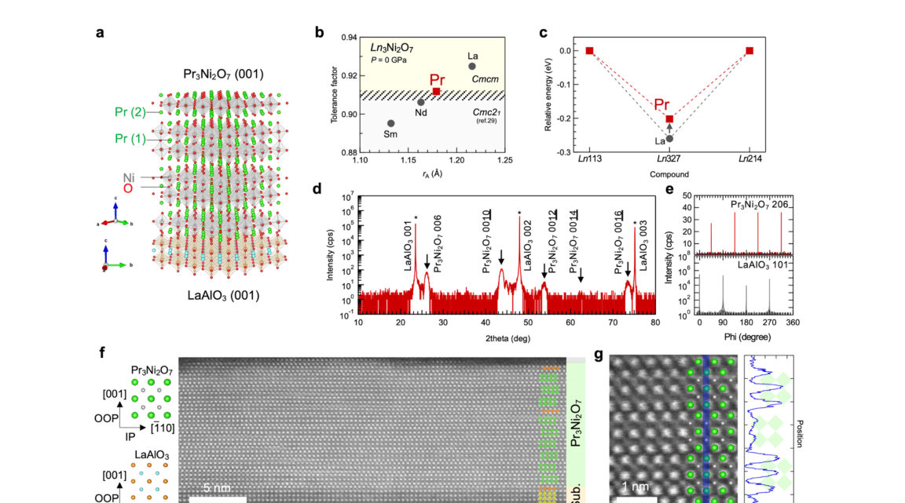
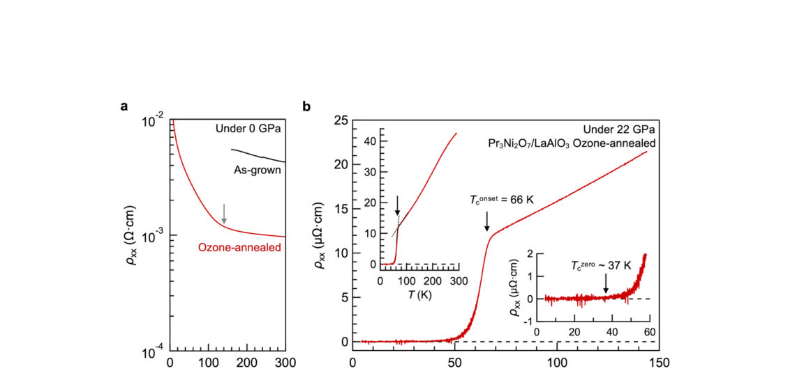
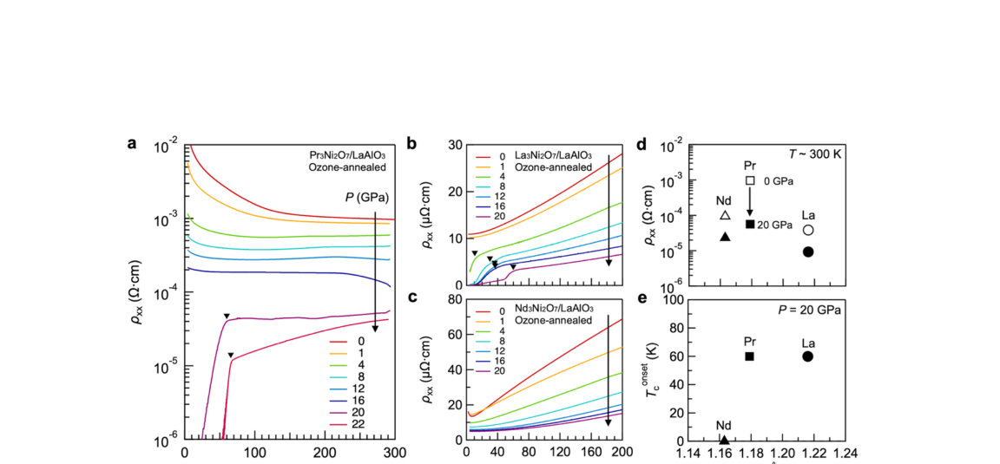
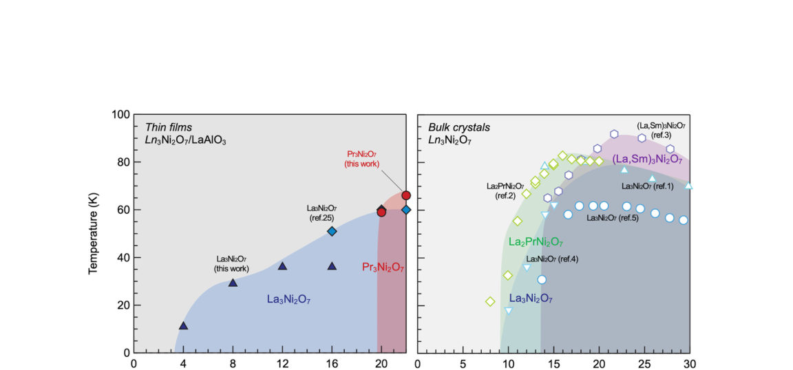
Summary. This paper demonstrates a method to stabilize otherwise unstable bilayer nickelates using epitaxial strain in thin films. It reports the discovery of pressure-induced superconductivity in Pr3Ni2O7 with a Tc of 66 K, providing a way to expand the family of high-Tc nickelates.
Why it may be interesting. not directly relevant
Detailed structure
Main problem. The difficulty of exploring new bilayer nickelates (Ln3Ni2O7) due to thermodynamic instability and the need to understand how lanthanide substitution and pressure influence superconductivity.
Main result. The researchers successfully used epitaxial stabilization to create Pr3Ni2O7 thin films, which exhibit pressure-induced superconductivity with an onset Tc of 66 K at 22 GPa.
Method. Thin films were grown via pulsed-laser deposition (PLD) on LaAlO3 substrates and subjected to ozone-annealing; structural characterization used XRD and STEM, while electronic properties were measured under high hydrostatic pressure up to 22 GPa.
Model / system. Epitaxially-stabilized Ln3Ni2O7 (where Ln = La, Pr, Nd) thin films, specifically focusing on the bilayer nickelate structure under high pressure and epitaxial strain.
Key observables. Superconducting transition temperature (T_c_onset and T_c_zero), temperature-dependent resistivity (rho_xx), and lattice parameters.
Important parameters / regimes. Pressure up to 22 GPa, lanthanide ionic radius, and epitaxial strain.
Assumptions / limitations. The use of DFT with the PBE functional and treating Pr 4f-orbitals as frozen core.
Figures summary. Fig 1: Epitaxial stabilization, crystal structure, and structural characterization (XRD, STEM). Fig 2: Resistivity vs temperature at ambient and high pressure. Fig 3: Comparison of resistivity changes across different lanthanide substitutions.
Paper structure. Introduction to nickelate instability, experimental methods for film growth and high-pressure transport, structural characterization and stability analysis, results of pressure-induced superconductivity, and a comparative discussion of lanthanide trends.
Abstract
The discovery of high critical-temperature $T_{\mathrm{c}}$ superconductivity in La$_3$Ni$_2$O$_7$ under high pressure has led to a rapid expansion of the $T_{\mathrm{c}}$ range through lanthanide $Ln$ substitution, and to ambient-pressure superconductivity in strained thin films, yet the exploration of new bilayer nickelates remains strongly constrained by thermodynamic stability. Beyond the difficulty of synthesis of bulk single-crystals, here we report on the pressure-induced high-$T_{\mathrm{c}}$ superconductivity in epitaxially-stabilized Pr$_3$Ni$_2$O$_7$ thin films. While the Pr$_3$Ni$_2$O$_7$ films exhibit insulating behaviour at ambient pressure regardless of ozone-annealing treatment, they show $T$-linear metallic transport and superconductivity reaching an onset $T_{\mathrm{c}}$ of 66 K and zero-resistance at nearly 40 K at 22 GPa. Furthermore, Nd$_3$Ni$_2$O$_7$, with the smaller rare-earth ion Nd, can also be stabilized, however, superconductivity is not observed in the measured pressure range. Epitaxial stabilization enables us to examine the dependence of $T_{\mathrm{c}}$ and the critical pressure $P_{\mathrm{c}}$ for superconductivity on the $Ln$ ion in $Ln_3$Ni$_2$O$_7$ ($Ln$ = La, Pr, Nd). These results suggest that a higher $P_{\mathrm{c}}$ is required for smaller $Ln$ ions, consistent with trends observed in bulk studies of $Ln$ substitution. This study demonstrates that epitaxial stabilization is a powerful technique to further expand the family of superconducting bilayer nickelates.
Probing topological phase transitions via nonlinear Hall response in strained moiré dice lattice
Authors: Gourab Paul, Srijata Lahiri, Bilal Tanatar, Saurabh Basu
Type: theory · Category: strongly correlated electrons · PDF: https://arxiv.org/pdf/2605.21229v1
Analysis basis: full PDF text, analyzed in chunks
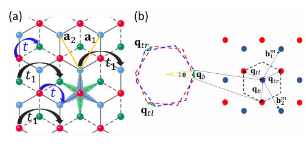
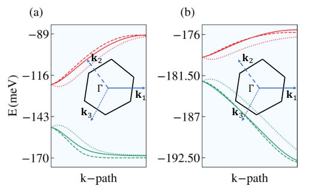
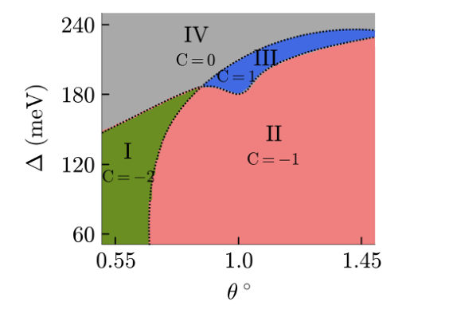
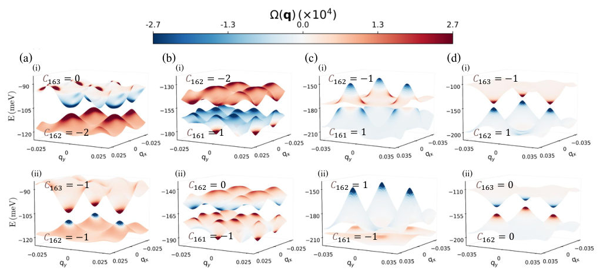
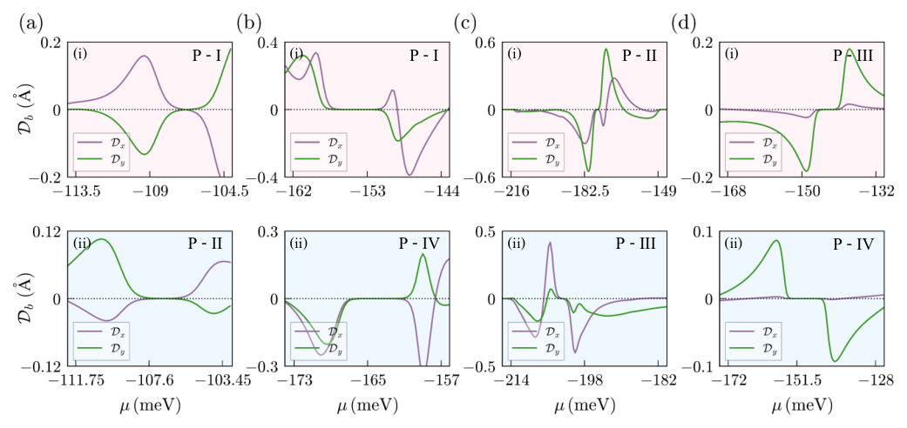
Summary. This paper demonstrates that the nonlinear Hall effect can be used to detect topological phase transitions in a twisted bilayer dice lattice where traditional Hall measurements fail due to time-reversal symmetry. By applying uniaxial strain, the researchers show that the Berry curvature dipole undergoes a sign reversal at phase boundaries, providing a clear experimental signature for band inversion.
Why it may be interesting. not directly relevant
Detailed structure
Main problem. Detecting and enumerating valley-specific topological phases in systems where time-reversal symmetry is preserved, which renders the conventional linear Hall effect ineffective.
Main result. The nonlinear Hall effect (NLHE) serves as an effective probe for topological phase transitions, exhibiting a characteristic sign reversal across phase boundaries and significant enhancement in the broken chiral symmetry regime.
Method. Numerical simulation using a continuum model based on the Bistritzer-MacDonald formalism to compute Berry curvature density, Chern numbers, and the Berry curvature dipole (BCD).
Model / system. A twisted bilayer dice lattice (TBDL) under applied uniaxial strain, modeled via a continuum Hamiltonian that includes interlayer hopping and broken symmetries (C3 and inversion).
Key observables. Nonlinear Hall response (NLHE), Berry curvature dipole (BCD) components (Dx, Dy), Chern number, and Berry curvature density.
Important parameters / regimes. Twist angle (theta), uniaxial strain (epsilon), staggered/onsite mass (Delta), carrier density (mu), and chiral symmetry regimes.
Assumptions / limitations. Neglect of spin-orbit coupling and specific assumptions regarding interlayer hopping hierarchy.
Figures summary. Fig 1: Schematic of dice lattice and moire Brillouin zone; Fig 2: Band structures under strain; Fig 3: Chern number phase diagram; Fig 4: Berry curvature density changes across phase transitions.
Paper structure. The paper introduces the problem of detecting topology in TRS systems, describes the strained TBDL model and symmetry breaking, presents numerical results for band structures and Chern phases, and demonstrates the NLHE as a diagnostic tool via BCD analysis.
Abstract
Valley polarized twisted bilayer dice lattice hosts topologically nontrivial flat bands far from charge neutrality due to broken time reversal symmetry, whereas the ones in the vicinity of it remain topologically trivial. However, when both valleys are taken into consideration, the time reversal symmetry is preserved, which poses a serious hindrance to enumerate the valley specific topological phases that rely on the detection of the Berry curvature. In this work, we demonstrate that such a twisted structure with an applied uniaxial strain exhibits a nonlinear Hall effect far from charge neutrality. We ascertain that the nonlinear anomalous Hall signals can serve as a probe for topological phase transitions associated with a specific energy state that is constrained to reside at the lower edge of the middle subband and controlled via a staggered mass. Specifically, we show that the nonlinear anomalous Hall response undergoes a sign reversal across the topological phase boundaries. By tuning the carrier density, we compute the nonlinear Hall response obtained from the Berry curvature dipole, both in the chiral limit, and also when the chiral symmetry is broken. It is further seen that the nonlinear Hall effect is significantly enhanced in the broken chiral symmetry regime.
Properties of the skyrmion crystal SkX-2 in the Heisenberg triangular lattice with scalar chirality
Authors: H. Bocquet, C. J. Ganahl, M. Scheurer, P. M. Derlet, A. M. Läuchli
Type: theory · Category: statistical mechanics · PDF: https://arxiv.org/pdf/2605.21010v1
Analysis basis: full PDF text, analyzed in chunks
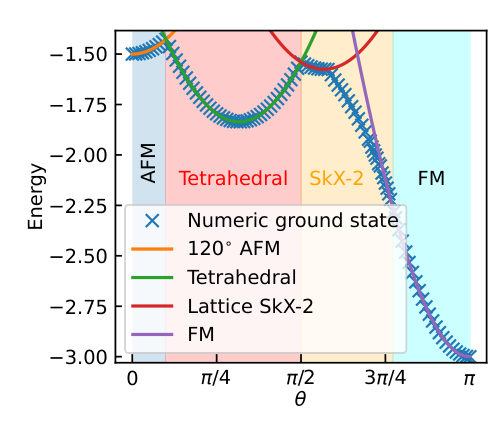
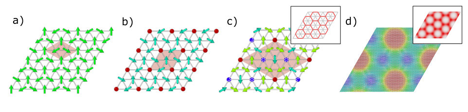
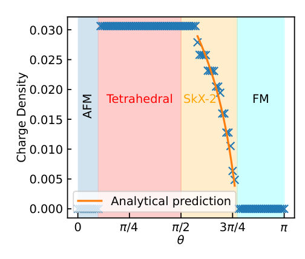
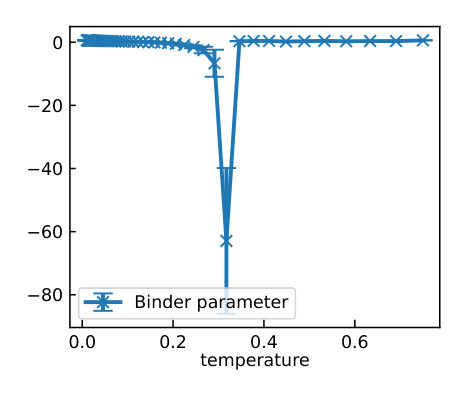
Summary. This paper explores a new type of skyrmion crystal (SkX-2) that is stabilized by scalar chirality rather than an external magnetic field. It details how this phase transitions between different types of order and how its melting is driven by the unbinding of topological defects. The work provides a complete picture of the phase diagram and thermal stability of these textures on a triangular lattice.
Why it may be interesting. The paper explores topological phase transitions (KTHNY and Z2-vortex unbinding) and the emergence of complex topological textures in a highly symmetric model, which is relevant to the study of many-body dynamics and topological order.
Detailed structure
Main problem. The study investigates the stability, phase transitions, and thermal properties of a specific type of skyrmion crystal, SkX-2, in a magnetic system without an external magnetic field.
Main result. The researchers identify a SkX-2 phase with two topological charges per unit cell and demonstrate that it undergoes a first-order transition in the lattice regime and a continuous KTHNY-type transition to a floating solid in the free regime.
Method. The study combines numerical optimization (basin hopping), Monte Carlo simulations (with replica exchange), and analytical approaches including Ginzburg-Landau theory and continuum expansion.
Model / system. A classical SO(3)-symmetric Heisenberg model on a triangular lattice, augmented with a scalar chirality interaction term.
Key observables. Topological charge density, magnetization, heat capacity, Binder cumulant, spin-spin correlation functions, and defect density (5-fold, 7-fold, etc.).
Important parameters / regimes. Exchange interaction (J), scalar chirality interaction (J_chi), and the parameter theta = arctan(J_chi/J).
Assumptions / limitations. The analysis assumes a classical spin model and uses a continuum expansion for the energy density and vortex energy derivations.
Figures summary. Figure 1 shows ground-state energies vs. theta; Figure 2 illustrates various spin configurations (AFM, tetrahedral, SkX-2, FM); Figure 4 shows the Binder parameter dip; Figure 5 shows heat capacity peaks; Figure 7 shows vortex energy scaling.
Paper structure. The paper begins with the identification of the SkX-2 ground state and its energy landscape, moves to the evolution of topological charge density via continuum expansion, then explores thermal phase transitions and defect-driven melting using Monte Carlo simulations, and concludes with analytical derivations of vortex energy.
Abstract
Skyrmion crystals have been primarily discovered under a magnetic field for materials with non-centrosymmetric interactions. More recent developments have investigated the stability of skyrmion crystals in itinerant magnets without magnetic field. In this study, we find that a type of skyrmion crystal with two topological charges per unit cell and no magnetization at the ferromagnetic point in reciprocal space, SkX-2, is naturally stabilized in an $SO(3)$-symmetric model with short-range interactions realized by the Heisenberg model on the triangular lattice with scalar chirality. We complement our numerical results with a theoretical analysis that quantitatively describes the transition from the ferromagnetic ground state to the SkX-2 and the evolution of the topological charge density. Despite the constraints given by the Mermin-Wagner theorem at finite temperature, the SkX-2 exhibits both a first-order phase transition associated with translation symmetry breaking and a continuous transition to a floating solid, depending on the charge density controlled by the model parameters. Finally, the tetrahedral phase supported by an antiferromagnetic interaction in our model is found to host $\mathbb{Z}_2$-vortices at finite temperature, suggesting the existence of an additional vortex topological transition.
Shear-Mode Raman Imaging of Ferroelectric Switching in Multilayer 3$R$-MoS$_2$
Authors: Yulu Liu, Kenji Watanabe, Takashi Taniguchi, Xiaoxiang Xi
Type: experiment · Category: other · PDF: https://arxiv.org/pdf/2605.21210v1
Analysis basis: full PDF text, analyzed in chunks
Summary. This paper uses Raman imaging to visualize how ferroelectric domains switch in 3R-MoS2 via interlayer sliding. It demonstrates that structural defects and boundaries act as pinning sites that control the pathways and stability of different stacking states. The work provides a non-invasive way to study the dynamics of domain walls in 2D sliding ferroelectrics.
Why it may be interesting. not directly relevant
Detailed structure
Main problem. Understanding the microscopic mechanism of ferroelectric switching in 3R-MoS2, specifically how domain walls and pinning sites influence interlayer sliding and polarization reversal.
Main result. The study establishes shear-mode Raman imaging as a tool to track switching, revealing that mechanical boundaries and pinning sites cause independent switching in different regions and create partially polarized end states.
Method. Shear-mode Raman spectroscopy and spatial mapping are used alongside second-harmonic generation (SHG) and dual-gate field-effect transistor measurements.
Model / system. Multilayer 3R-MoS2 (rhombohedral stacking) in a dual-gate field-effect transistor architecture, acting as a sliding ferroelectric.
Key observables. Shear-mode Raman frequency and intensity, source-drain current (Ids) hysteresis, and second-harmonic generation (SHG) orientations.
Important parameters / regimes. Vertical electric field (E_perp), domain wall orientations (zigzag, armchair, and chiral), and switching regimes (superlubric vs. pinned).
Assumptions / limitations. The Raman measurement timescale is much slower than the superlubric regime DW velocity, making intermediate states invisible in that regime.
Figures summary. Fig 1 shows Raman maps and stacking schematics; Fig 2 illustrates the device, current hysteresis, and Raman-detected domain evolution; Fig 3 and 4 detail domain wall orientations and the impact of structural steps.
Paper structure. The paper introduces the 3R-MoS2 system, describes the Raman imaging technique, presents experimental evidence of domain-dependent switching pathways, analyzes the role of structural boundaries and pinning, and concludes with the utility of Raman spectroscopy for studying sliding ferroelectrics.
Abstract
We use shear-mode Raman imaging to track ferroelectric switching in multilayer 3$R$-MoS$_2$. Within a single flake, mechanically segmented regions respond independently and follow distinct pathways. Partially polarized end states indicate that domain walls can reside between selected layer pairs, producing partial stacking transformations. The dwell time of intermediate states varies widely, indicating that pinning sites strongly influence the dynamics. Second-harmonic generation measurements further reveal three characteristic sample-boundary and domain-wall orientations, including a prevalent chiral direction near the zigzag-armchair bisector. These results provide a direct, noninvasive view of domain-wall-mediated switching in a prototypical sliding ferroelectric and identify pinning and exfoliation-created boundaries as key factors governing its dynamics.
Superconducting PdTe Thin Film Via Topotactic Transformation, Toward Topological Superconductors
Authors: Hee Taek Yi, Min Ge, Renjie Xie, Colby J. Stoddard, David H. Yi, Xiaoyu Yuan, Xiong Yao, Seongshik Oh
Type: experiment · Category: strongly correlated electrons · PDF: https://arxiv.org/pdf/2605.20437v1
Analysis basis: full PDF text, analyzed in chunks
Summary. The researchers developed a method to grow high-quality PdTe thin films using a topotactic transformation from a PdTe2 buffer layer. These films exhibit superconducting properties nearly identical to bulk crystals, providing a new platform for studying topological superconductivity and Majorana physics.
Why it may be interesting. not directly relevant
Detailed structure
Main problem. The difficulty in growing high-quality PdTe thin films with superconducting properties comparable to bulk crystals, which is essential for realizing topological superconductivity and Majorana zero modes.
Main result. High-quality, superconducting PdTe thin films were successfully grown via a topotactic transformation from a PdTe2 buffer layer, exhibiting a sharp superconducting transition (Tc = 4.43 K) and 2D superconducting behavior.
Method. Molecular Beam Epitaxy (MBE) was used to grow Pd on a PdTe2 buffer layer under Te-deficient conditions to drive a topotactic phase transformation.
Model / system. The physical system consists of PdTe thin films (NiAs-type structure) and PdTe2 buffer layers (CdI2-type structure) grown on Al2O3 (0001) substrates.
Key observables. Superconducting transition temperature (T_c), transition width, Residual Resistivity Ratio (RRR), upper critical field anisotropy (B_c2), and carrier mobility/density.
Important parameters / regimes. Te/Pd flux ratio (r), lattice constants, stacking angles, and the diffusivity ratio (eta).
Assumptions / limitations. The use of a multi-band Werthamer-Helfand-Hohenberg (WHH) model to fit upper critical field data and a four-carrier model to fit Hall effect data.
Figures summary. Figure 1 shows RHEED images, temperature-dependent resistance, and B_c2 anisotropy. Figure 2/3 details the phase evolution, structural changes, and transport properties as a function of the Te/Pd ratio. Figure 4 presents STEM images of stacking angles.
Paper structure. The paper introduces the motivation for PdTe films, describes the MBE growth and topotactic transformation mechanism, presents structural characterization (XRD, RHEED, STEM), details the transport and superconducting properties, and concludes with the implications for topological physics.
Abstract
Topological superconductors (TSCs) hosting Majorana zero modes (MZMs) offer a pathway to fault-tolerant quantum computation. PdTe is a promising TSC candidate due to its topological surface states and a reasonable superconducting critical temperature of ~4.5 K. However, it has been challenging to grow PdTe thin films with bulk-like superconducting properties. Here, we show that high-quality, superconducting PdTe thin films can be grown using molecular beam epitaxy (MBE). The films exhibit a sharp superconducting transition (T_onset = 4.43 K with transition width of 0.06 K), comparable to that of bulk crystals. This was made possible via a topotactic transformation from a PdTe_2 buffer layer to a PdTe phase by growing Pd on top under Te-deficient conditions. Structural and transport analyses confirm the NiAs-type structure of PdTe, as well as its two-dimensional superconducting behavior and excellent air stability. These findings suggest that the MBE-grown PdTe films and their heterostructures are a promising platform for topological superconductivity and Majorana physics.
The Topography Trap: Sifting Interlayer Excitons from Strain-Related Artifacts in Real-World 2D Hetrostructures
Authors: Pablo Hernández López, Luka Pirker, Astrid Weston, Arijit Kayal, Rafael Nadas, Adrián Dewambrechies Fernández, Álvaro Rodríguez, Roman Gorbachev, Kirill I. Bolotin, Otakar Frank, Sebastian Heeg
Type: experiment · Category: other · PDF: https://arxiv.org/pdf/2605.20869v1
Analysis basis: full PDF text, analyzed in chunks

Summary. This paper introduces a systematic protocol to distinguish true interlayer excitons from strain-induced artifacts in 2D heterostructures. By correlating spectroscopy with topography, the authors prove that certain widely reported excitonic species are actually signals from strained monolayers trapped in interface bubbles. This work provides a much-needed framework for reliable spectroscopic identification in the field of van der Waals materials.
Why it may be interesting. not directly relevant
Detailed structure
Main problem. The difficulty in distinguishing genuine interlayer excitons (IXs) from spurious signals caused by strain and topographical defects (bubbles/wrinkles) in 2D TMDC heterostructures.
Main result. The authors demonstrate that previously reported bright, momentum-indirect GammaK-IX in MoS2-WSe2 is actually a strain-induced artifact of WSe2 intralayer excitons, and they provide a decision-tree protocol to prevent such misidentifications.
Method. A three-step decision-tree protocol involving intralayer exciton quenching analysis, energy thresholding, and spatial correlation between photoluminescence (PL) and AFM topography, supplemented by Tip-Enhanced PL (TEPL).
Model / system. 2D transition metal dichalcogenide (TMDC) heterostructures, specifically MoS2-MoSe2 and MoS2-WSe2, featuring Type-II band alignment and topographical irregularities like bubbles and wrinkles.
Key observables. Photoluminescence (PL) intensity, emission energy, intralayer exciton quenching factor, AFM topography, and sub-diffraction-limited TEPL maps.
Important parameters / regimes. Twist angle, energy separation between peaks (threshold of 200 meV), quenching percentage (threshold of 90%), and strain levels (0.2-0.7%).
Assumptions / limitations. The protocol assumes that high quenching of intralayer excitons is a reliable proxy for efficient interlayer charge transfer.
Figures summary. Figure 1 shows the decision-tree protocol flowchart; Figure 2 demonstrates the application of the protocol to MoS2-MoSe2 and the identification of strain artifacts in MoS2-WSe2 via PL/AFM correlation; Figure 3 uses TEPL to resolve the nanoscale origin of the strain-induced signal.
Paper structure. Introduction of the identification problem, presentation of the three-step decision-tree protocol, experimental validation using MoS2-MoSe2, critical analysis/refutation of the GammaK-IX in MoS2-WSe2 using AFM and TEPL, and conclusion on the necessity of robust characterization.
Abstract
Novel excitonic phenomena emerging in transition metal dichalcogenide (TMDC) heterostructures belong to the most exciting topics in contemporary physics of van der Waals materials. Interlayer excitons (IXs) stand out among those due to their long radiative lifetimes and tunability by electric fields, strain, and twist angle. However, many ambiguities persist in the optical identification and manipulation of IXs, highlighting the need for reliable spectroscopic criteria that distinguish interlayer species from spurious signals. Here, we present a decision-tree protocol that evaluates interlayer coupling via intralayer exciton quenching and correlates photoluminescence (PL) with atomic force microscopy (AFM) to correctly assign room-temperature PL features in TMDC-based heterostructures. Applying this protocol, we identify momentum-direct IX between the K valleys of the two layers (KK-IX) in MoS2-MoSe2 and MoS2-WSe2 heterostructures at room temperature. In contrast, our protocol contests the reported bright, momentum-indirect, twist-angle-independent $Γ$K-IX in MoS2-WSe2. Comprehensive experimental data, including infrared and tip-enhanced photoluminescence (TEPL) with sub-diffraction-limited resolution, show no compelling evidence for this excitonic species, despite numerous reports. Instead, the spectroscopic features previously assigned to this $Γ$K-IX originate from locally strained WSe2 at topographical inhomogeneities of the heterostructure interface, underscoring the need for robust, spatially resolved characterization of real-world samples in this highly accessible field and providing a generally applicable framework for identifying interlayer excitons in 2D semiconductor heterostructures.
Tuning the low-energy band structure in twisted bilayer WSe2
Authors: T. -H. -Y. Vu, O. J. Clark, N. H. Jo, J. Blyth, Q. Li, C. Jozwiak, A. Bostwick, J. B. Muir, L. Jia, J. A. Davis, I. Di Bernardo, A. Grubisic Cabo, K. Xing, W. Zhao, S. H. Ryu, S. H. Lee, Z. Mao, K. Watanabe, T. Taniguchi, B. A. Chambers, S. L. Harmer, E. Rotenberg, M. S. Fuhrer, M. T. Edmonds
Type: experiment · Category: other · PDF: https://arxiv.org/pdf/2605.20671v1
Analysis basis: full PDF text, analyzed in chunks
Summary. This paper demonstrates that the twist angle in bilayer WSe2 can be used to precisely tune the energy separation between different hole bands. This tuning capability allows for the control of band gaps and electron-phonon coupling efficiency in TMD-based electronic devices.
Why it may be interesting. not directly relevant
Detailed structure
Main problem. The study aims to understand how the twist angle in bilayer WSe2 tunes the low-energy electronic band structure, specifically the energy separation between the K and Gamma points.
Main result. The momentum positioning of the valence band maxima is independent of the twist angle, but the energetic separation between the K-point and Gamma-point hole bands can be tuned by over 100 meV via the twist angle.
Method. The researchers used nano-angle-resolved photoemission spectroscopy (nano-ARPES) with nanoscale spatial resolution to track electronic structure evolution.
Model / system. The physical system is a 2H-structured twisted bilayer WSe2 (a transition-metal dichalcogenide) van der Waals heterostructure.
Key observables. Momentum positioning of valence band maxima, energy separation between K and Gamma hole bands, band dispersion, and spin-orbit splitting.
Important parameters / regimes. Twist angle (ranging from 0 to 120 degrees), binding energy, and interlayer hopping channels.
Assumptions / limitations. The study assumes that the observed band shifts are driven by interlayer hopping of d-orbitals rather than moire-induced flat bands or correlated phases.
Figures summary. Figure 1 shows a schematic of the nano-ARPES setup; Figure 3 shows the K-Gamma energy separation findings; Supplementary Figure S1 shows band dispersions and Energy Distribution Curves (EDCs) with fitted peaks.
Paper structure. The paper introduces the problem of band tuning in TMDs, describes the experimental fabrication and nano-ARPES setup, presents the systematic measurement of band evolution across twist angles, discusses the underlying mechanism of interlayer hopping, and concludes with implications for electron-phonon coupling.
Abstract
Tuning the electronic structures of two-dimensional (2D) material-based heterostructures is of crucial importance for their use in functional next-generation electronics. Here, through angle-resolved photoemission spectroscopy with nanoscale spatial resolution (nano-ARPES), we systematically track the evolution of the near-Fermi-level electronic structure of bilayer WSe2 over a large range of twist angle. While the momentum positioning of the valence band maxima is independent of twist angle, we find that the energetic separation between the hole bands at the K point of the Brillouin zone and the higher binding-energy hole band at Γ can be varied in excess of 100 meV. We explore the mechanisms underpinning this evolution and discuss the implications for tuning both the size of the band gaps, and the efficiency of the spin-dependent electron-phonon coupling channels in homobilayer transition metal dichalcogenide devices.
Ultra-Confinement of Polaritons in Single Atomic Layer Ag Photonic Quantum Dots
Authors: Xinyi Li, Tetyana Ignatova, Chengye Dong, Krishnan Mekkanamkulam Ananthanarayanan, Rinu Abraham Maniyara, Arpit Jain, Furkan Turker, Vinay Kammarchedu, Aida Ebrahimi, Joshua A. Robinson, Slava V. Rotkin
Type: both · Category: other · PDF: https://arxiv.org/pdf/2605.21345v1
Analysis basis: full PDF text, analyzed in chunks
Summary. The paper introduces a new analytical technique using Argand diagrams to study surface polaritons in nanostructures smaller than the polariton wavelength. It demonstrates that a single atomic layer of silver can ultra-confine electromagnetic fields in both vertical and lateral directions. This method overcomes the limitations of standard near-field microscopy in resolving wave properties in sub-diffraction-sized objects.
Why it may be interesting. not directly relevant
Detailed structure
Main problem. Quantitatively analyzing and extracting the propagation constant of surface polaritons in sub-diffraction-sized 2D nanostructures where standard sSNOM analysis fails due to lack of interference patterns and background interference.
Main result. Development of an eikonal-based analytical approach using Argand diagrams that successfully reveals the local propagation constant and demonstrates ultra-confinement of polaritons in both vertical (~lambda/50) and lateral (~lambda/40) directions.
Method. An eikonal-based representation of the surface polariton wave using Argand plots (real vs. imaginary parts of the sSNOM signal) to trace phase increments and identify wave properties via circular arc fitting.
Model / system. A 2D van der Waals heterostructure consisting of a single atomic layer of Silver (Ag) encapsulated by epitaxial graphene (EG) on a Silicon Carbide (SiC) substrate, patterned into nano-disks (photonic quantum dots).
Key observables. Third-harmonic demodulated sSNOM signal (amplitude and phase), local propagation constant (k_SP), and confinement factors.
Important parameters / regimes. Mid-infrared range (963-1040 cm^-1), nano-disk diameter < 1 um, vertical confinement ~lambda/50, lateral confinement ~lambda/40.
Assumptions / limitations. The photonic dot possesses axial symmetry (radial eikonal wave); the variation in amplitude is slow enough to be ignored when calculating the propagation constant.
Figures summary. Fig 1: Fabrication and atomic-scale morphology (STEM/AFM). Fig 2: sSNOM imaging and raw amplitude. Fig 3: Boundary identification and eikonal wave maps. Fig 4: Dispersion relations. Supplemental: Argand plots, validation against hBN/graphene, and gradient maps.
Paper structure. Introduction of the analytical challenge -> Fabrication and characterization of Ag/EG/SiC nanodisks -> Presentation of the eikonal/Argand analytical method -> Demonstration of confinement and boundary detection -> Validation of the method using different material systems and bulk comparisons.
Abstract
Light scattering by two-dimensional (2D) van der Waals heterostructures (vdWHs) is immense, especially given their infinitesimal volume, thus enabling strong light-matter interactions. Surface 2D polariton waves manifest through large concentration of electromagnetic field in vertical direction, normal to their propagation. By confining vdWH materials into 2D photonic shapes, one can manipulate and compress light in lateral directions. Scattering-type scanning near-field optical microscopy is a perfect tool for direct imaging of the propagating polaritons and studying the properties of confined polaritons in nanostructures. Though, thus far the quantitative analysis, such the wavelength extraction, has been challenged for confined polaritons by incapability of mapping of the wave period on sub-wavelength scale and difficulty of identifying an adequate substrate's "background" to subtract. Here, an analytical approach is developed to reveal the local propagation constant of confined polaritons under abovementioned constraints and map it with the sub-wavelength resolution. Applied to analysis of the SiC/2D-Ag/EG (epitaxial graphene) photonic nanostructures, the technique uncovered that the polaritons are highly confined in both vertical ($\simλ$/50) and lateral directions ($\simλ$/40) by 2D metal.